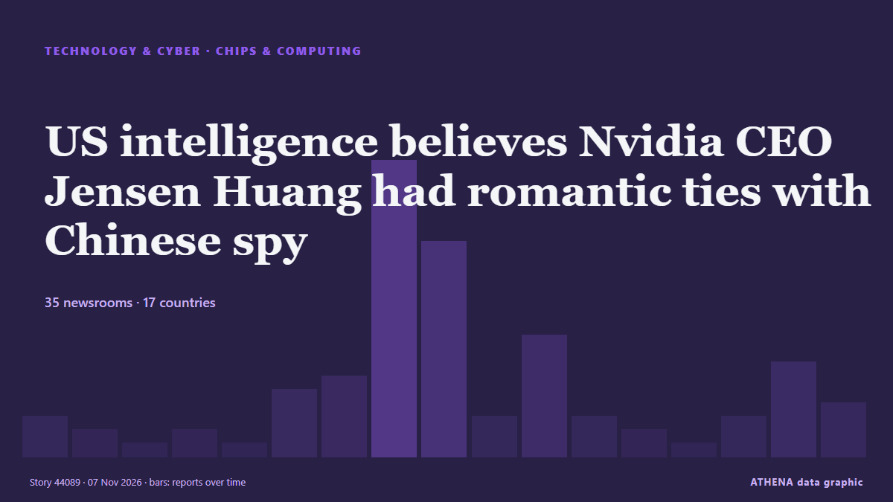

Technology, AI & Cybersecurity
SponsoredPresented by  Cybernetics and Artificial Intelligence Lab Welcome to the Cybernetics and Artificial Intelligence Laboratory, established at the Department of Business Administration of the National and Kapodistrian University of Athens. The lab is headed by Professor Dimitrios Thomakos. The lab aims to do research that can be published in top venues. Our research uses tools and methods of Artificial Intelligence, and lies in the following areas: - Forecasting - Decision making - Cyber security - Finance We are always looking forward to collaborating with exceptional students!
Cybernetics and Artificial Intelligence Lab Welcome to the Cybernetics and Artificial Intelligence Laboratory, established at the Department of Business Administration of the National and Kapodistrian University of Athens. The lab is headed by Professor Dimitrios Thomakos. The lab aims to do research that can be published in top venues. Our research uses tools and methods of Artificial Intelligence, and lies in the following areas: - Forecasting - Decision making - Cyber security - Finance We are always looking forward to collaborating with exceptional students!

Chips & computingUS intelligence believes Nvidia CEO Jensen Huang had romantic ties with Chinese spy
Nvidia CEO Jensen Huang warned that Europe risks falling further behind the US and China in artificial intelligence, despite its industrial base and technical talent. from DigiTimes Asia
| 25 Oct | 26 |
|---|---|
| 26 Oct | 78 |
| 27 Oct | 84 |
| 28 Oct | 88 |
| 29 Oct | 89 |
| 30 Oct | 80 |
| 31 Oct | 34 |
| 1 Nov | 47 |
| 2 Nov | 111 |
| 3 Nov | 102 |
| 4 Nov | 99 |
| 5 Nov | 110 |
| 6 Nov | 41 |
| 7 Nov | 8 |
Gallen speaks after sickening knockout
Paul Gallen speaks and says 'Father Time is undefeated' after being knocked out by Nelson Asofa-Solomona. from Sydney Morning Herald
OpenAI to press ahead with data-center expansion despite midterm sweep, CFO tells CNBC
Voters across the country on Tuesday voiced their support for candidates who have pledged to place restrictions on data center development. from CNBC World
Ukrainian forces carry out over 30,000 drone missions in single month for first time
Verified Delta combat data has revealed Ukrainian unmanned ground vehicles carried out 31,398 frontline supply and casualty evacuation tasks in October. from Ukrainska Pravda (English)
Ships loiter near subsea cables amid Iran's warnings to Trump
Iran threatened to attack subsea cables if US escalates military strikes again. from Ars Technica
Bomb threats spread to European newsrooms after wave of passenger jet scares
Spain's foreign minister said the continent appeared to be facing "hybrid aggression and a form of psychological warfare". from ABC News Australia
Google plans $17 billion Wyoming data center amid rising threats of curbs
Investments will occur during 2027 and 2028. from Data Center Dynamics
OpenAI's new GPT-6 Cyber AI finds 81 Firefox flaws, 948 Linux bugs
OpenAI has revealed GPT-6 Cyber, a new artificial intelligence model that has discovered 81 previously unknown high-severity Firefox vulnerabilities and developed working exploits for 948 distinct… from BleepingComputer
Russell Brand’s barrister reports himself to regulator after tirade against journalist
Ian Winter told Rosamund Urwin shortly after guilty verdict, 'You f***** it' from Irish Examiner
Salon is shutting down after 31 years
Salon launched 31 years ago as one of the first online-only news magazine outlets, and it announced today in an unsigned post that it's ceasing publication. from The Verge
Anthropic rolls out personal finance feature for Claude
With Personal Finance in Claude, users can connect their bank and card accounts through Plaid and ask questions about their finances. from TechCrunch
SpaceXAI started Southaven data center construction without water permits, state alleges. Fines could exceed $6M
SpaceXAI could face fines of over $6 million for allegedly violating state water pollution laws at its Southaven data center facilities. from Mississippi Today
Jack Grealish agreement reached as Everton manager David Moyes told what to do
Jack Grealish has missed the last three Everton games after breaching club discipline and David Moyes has been told how to deal with the winger. from Liverpool Echo
Could the AI bubble burst after Democrats' midterms sweep? - The Latest
Global tech stocks have plunged after the Democrats’ victory in the US midterm elections, with fears of a slowdown in AI development. from Guardian Business
Azerbaijani Parliament speaker participates in Aqaba Process meeting in Astana
President Shavkat Mirziyoyev will visit Astana on November 5–6 to attend a meeting of Central Asian leaders under the Aqaba Process, which will focus on artificial intelligence security and… from Kun.uz (English)
NASA announces experimental X-70 Fractal aircraft: A 'new beginning for aeronautics'
NASA has announced its next X-plane, known as the X-70 Fractal, designed to test advanced maneuverability and which will feature a rapidly reconfigurable design. from Space.com
Google turns off AI for schoolchildren by default
Google has said it will switch off its AI tools for schoolchildren by default, after drawing criticism for pushing artificial intelligence features to students while schools are still debating how… from Vanguard
600,000 Nvidia Chips Pile Up in Hong Kong Awaiting China’s Import Approval
About 600,000 Nvidia H200 artificial intelligence chips remain stored in Hong Kong, awaiting shipment to mainland China as Beijing has yet to approve large-scale imports despite strong demand from… from Colombia One
Instagram brings Edits to desktop to take on CapCut
The move puts Edits in more direct competition with ByteDance's CapCut, the video-editing app Meta sought to challenge when it launched Edits last year. from TechCrunch
Ukraine Seeks New Contract for Starshield Amid Connectivity Challenges
Despite the still unexplained speed limitations imposed on Ukraine by the Starshield satellite network last month, Kyiv is pushing for renewal of the agreement with the US government due to expire in… from Kyiv Post
China blocks SoftBank's $5.4bn deal for ABB robotics division
The block adds a regulatory overhang to SoftBank on a day the shares were already under pressure from Arm and the AI selloff, and uncertainty over whether a fresh application is viable may keep that… from investingLive (ForexLive)
US warns of 'ongoing cyber threat' to industrial refrigeration systems
Urges industrial refrigeration control system operators to apply software updates, pull devices off public internet. from Express Tribune
Airbnb is working on an AI travel agent
Airbnb plans to roll out an AI agent in the first half of 2027 that will help users plan and book travel, the company said in its Q3 2026 earnings shareholder letter released today. from The Verge
US voters back data center restrictions amid backlash over artificial intelligence expansion
Local bans, development limits gain support as new Democratic governors in Texas, Georgia pledge tougher oversight. from Anadolu Agency (English)
Tencent launches Hy4 model to boost visual reasoning, AI safety
Tencent has launched its next-generation artificial intelligence (AI) model, Hy4, adding visual understanding for the first time and limiting cybersecurity training data to reduce the risk of misuse… from DigiTimes Asia
AI sharpens cat-and-mouse hacking battle as companies strengthen defences
From hacked supermarket fridges and a record cryptocurrency theft at Binance to an emergency over flaws in widely used web software, companies worldwide are facing a wave of cyber threats executives… from Tuoi Tre News
The M6 MacBook Pro is probably the last of its kind
On November 6th, Apple will release an all-new MacBook Pro. from The Verge
Texas data centers face uncertain future after Hinojosa wins governor’s race
Texas governor-elect Gina Hinojosa has rattled the state's data center industry with a campaign pledge to halt new projects, injecting new uncertainty into one of the country's fastest-growing… from Korea Herald
Apple spyware alerts reach German MPs and journalists in 99 countries
Germany’s cybersecurity agency has told lawmakers who got Apple’s spyware warnings to treat their iPhones as possibly compromised. from The Next Web
Was Elon Musk the US midterms' biggest loser? – Stateside with Kai and Carter
The tech industry spent big on the midterms, but it turned out to be a poor investment. from Guardian Business
Musk’s Tesla, SpaceX slide as Democrats take control of Congress
Tesla shares drop 2.6% and SpaceX slides 2.1% in early trading as Musk-backed Republicans lose Texas Senate and governor’s races. from Anadolu Agency (English)
S. Korea posts record high current account surplus of over US$60 bln in Sept. on chip supercycle
SEOUL, Nov. 5 (Yonhap) -- South Korea posted an all-time high current account su... from Yonhap (English)
Hackers target French blood bank refrigeration
Greece's National Cybersecurity Authority urges businesses to strengthen their digital defences following new attacks on fridge and freezer systems. from to vima
Bengaluru startup Aina unveils AI ring to predict users' next actions
Founded by former Ultrahuman executive Apoorv Shankar, Aina has unveiled an AI-powered ring that anticipates user needs and controls apps and devices, with pre-orders from $399. from Business Standard
Disinformation threatens trust in election results: Researcher
Research has shown that disinformation is threatening trust in election results, and not just voter. from SABC News